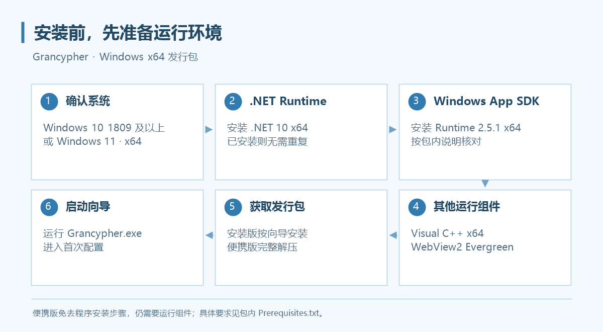

安装与环境配置
先准备运行组件，再安装或解压 Grancypher。便携版仅免去程序安装步骤，仍需要运行组件。

系统要求
发行包面向 Windows x64，支持 Windows 10 1809 及以上版本、Windows 11。请在系统“设置 → 系统 → 关于”确认系统类型。正式发行包以下载页提供的架构为准。
准备运行组件
当前发行包不捆绑以下组件，已安装的组件无需重复安装。包内 Prerequisites.txt 是核对安装要求的直接依据。
| 组件 | 当前发行要求 | 官方下载入口 |
|---|---|---|
| .NET Runtime | .NET 10，x64 | 下载 .NET 10 |
| Windows App SDK Runtime | 2.5.1，x64 | Windows App SDK 下载页 |
| Visual C++ Redistributable | x64 | 下载运行库 |
| Microsoft Edge WebView2 Runtime | Evergreen | WebView2 下载页 |
使用程序不需要安装 Visual Studio 或开发用 SDK。运行组件若提示重启 Windows，请先完成重启。
选择发行包
打开 Releases，展开目标版本的 Assets。
| 文件 | 用途 |
|---|---|
Grancypher-v版本号-Setup-win-x64.exe |
安装版，按向导安装到当前用户 |
Grancypher-v版本号-Portable-win-x64.zip |
便携版，解压后运行 |
SHA256SUMS-v版本号.txt |
下载文件的 SHA-256 校验清单 |
安装版
- 下载
Setup-win-x64.exe。 - 按安装向导选择位置并完成安装。程序安装到当前用户，无需管理员权限；安装运行组件时按组件自身提示操作。
- 从桌面或开始菜单入口启动 Grancypher。
便携版
- 下载
Portable-win-x64.zip。 - 将压缩包完整解压到可写目录，例如
D:\Apps\Grancypher。 - 运行文件夹内的
Grancypher.exe。
请保留整个解压目录，不要只复制 EXE，也不要直接在压缩包内运行。 默认账户资料仍保存在 AppData，便携版不代表登录资料随 EXE 一起移动。
可选：核对下载文件
在 PowerShell 中计算下载文件的 SHA-256，并与同版本校验清单中的对应条目比较：
Get-FileHash -LiteralPath "D:\Downloads\Grancypher-v0.3.4-Portable-win-x64.zip" -Algorithm SHA256
文件名和路径替换为自己的下载位置。
升级已有程序
备份现有数据
- 在旧版“设置 → 数据与缓存”分别备份用户配置和书签。
- 关闭全部 Grancypher 实例。
- 安装新版，或把便携版完整解压到新的程序目录。
- 启动后确认配置目录、书签和登录状态。
安装版与便携版可使用同一个已配置的数据目录。卸载程序不会删除已有登录资料和设置。程序目前没有自动更新功能。
从使用旧 GranblueBrowser 默认数据目录的版本升级时，新版不自动识别该旧目录；请通过选择已有配置目录或分别还原设置、书签处理。备份文件不包含 Cookies，详见多用户配置。